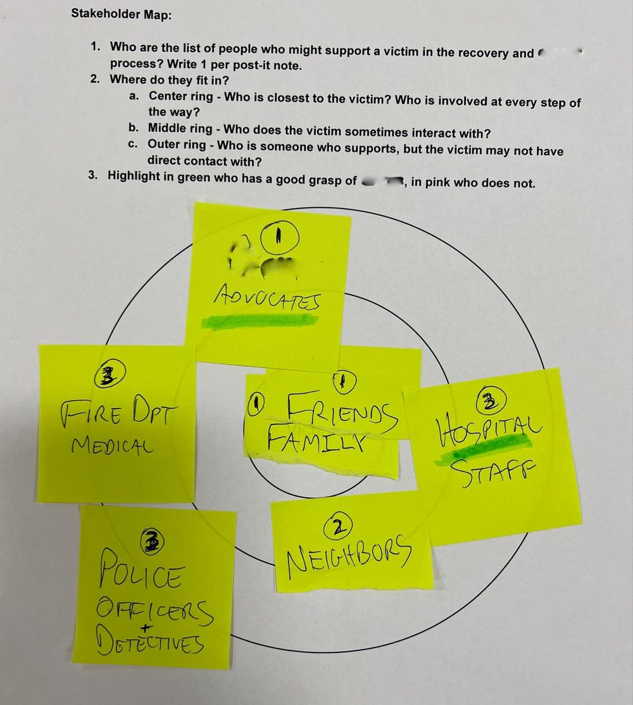
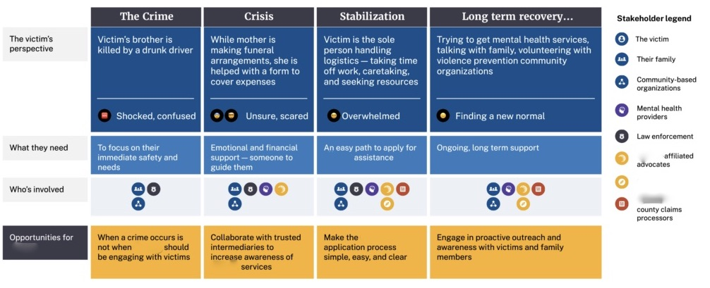

Getting compensation to victims of crime
Closing the gap between eligible crime victims and those who actually apply for compensation.
The challenge
A U.S. state’s victim compensation agency noticed that despite an increase in rates of violent crime, fewer eligible victims applied for compensation. The agency wanted to understand how to close the participation gap between the number of eligible victims of violent crime and people applying for compensation. Ultimately, they wanted to get compensation to victims of violent crime to assist their recovery.
The project
I was one of 4 user experience researchers on a multidisciplinary team. In my role, I co-facilitated client kickoff activities, drafted the research plan, recruited participants, reviewed literature and existing data, moderated interviews, conducted field observation, analyzed and synthesized findings. I took a lead role in developing the victim journey map, and preparing and delivering the final presentation.
We conducted online and in-person research with agency staff, claims processors, victims of crime, community-based organizations, victim advocates, law enforcement and mental health providers.

Insights
We learned that the gap between those who are a victim of violent crime, and victims who apply for compensation is about more than awareness. Victims need targeted and timely messaging to support updake. For example, the most successful applications were when the victim has support throughout the entire process. Supporters need a greater access to assist victims with applications.
We also saw that relationships with external partners like advocates, hospitals, community-based organizations, and law enforcement need to be strengthened. They play a critical role in helping victims, but there is a lack of communication from the agency.

Reflections
Recruiting victims of violent crime was difficult due to legal constraints in disclosing applicant details. We worked around this through fieldwork, and visiting community-based organizations, police stations, and speaking with victim advocates.
We elevated these stories and the voices of victims through vignettes and journey maps when reporting back to the client. This was critical to emphasizing to the client that the problem of low applications was more about the messenger and the timing of their messaging than what they had assumed was a need for more public awareness campaigns.